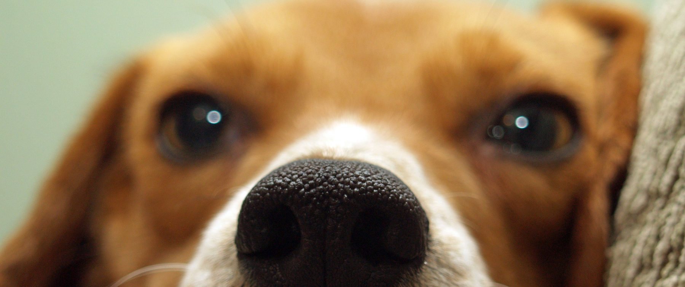

learn
The bits worth understanding, in plain terms: what testing actually involves, where your money goes, and what the labels really mean.
New to this? a home kind is a no-lecture guide to cruelty-free and vegan living: honest brand checks, quick swaps, and where the money really goes. Start wherever feels least overwhelming, you don't need to overhaul everything at once, that's not how any of this sticks.
pick a place to start
 Beauty & skincare
Beauty & skincare Household & cleaning
Household & cleaningwhat to actually look for
A bunny on a bottle means nothing unless someone's checked it. These are the three worth trusting, click through, search the brand, see for yourself:
· Leaping Bunny
· Cruelty Free International
· PETA's Beauty Without Bunnies
logos worth trusting, and the fakes to watch for
Anyone can print a bunny on a box. It costs nothing and means nothing unless it's one of the logos an actual certification body checked and approved. These are the real ones, the sort worth trusting on sight:

Leaping Bunny and Cruelty Free International's own logo are the two backed by an actual audit trail, the company has to prove it and get checked again to keep using them. The vegan seals (the sunflower, the Certified Vegan heart from vegan.org, and the Vegetarian Society's Vegan Approved) all confirm the same thing in the other direction: no animal ingredients, not whether animals were tested on to make it. A brand can carry a vegan seal and still test on animals elsewhere, which is exactly why the two questions, cruelty-free and vegan, need checking separately. A generic rabbit doodle with no certifier's name attached, no website, nothing you could look up, is the fake version: it means the brand chose some clip art, not that anyone checked anything.
Years ago I saw a meme of a gorilla wearing lipstick. The caption was something about animal testing. I laughed at it.
I didn't know then that it wasn't a joke about a gorilla in lipstick, because that isn't what happens. Nobody is dabbing blusher on a chimp and taking notes. What actually happens is much quieter, much more clinical, and much worse.
So here's the plain version. No photographs, no shock tactics. Just what the words on the label are covering up.
the tests themselves
Tap a card for the fuller detail. Nothing graphic, just the mechanics most people never get told.
why beagles
This is the part I find hardest.
Of all the non-human animals in this story, dogs are the ones people tend to flinch at hardest, maybe because we already know their personalities. Beagles are the most-used dog in laboratories worldwide, and it isn't because of their biology. It's because of their temperament. They're friendly. They're trusting. They're bred to work in packs, so they don't resist. They forgive you.
A lab technician quoted by the Beagle Freedom Project put it plainly: they won't fight back, they let us do anything we want to them, that's why we like beagles.
The exact trait that makes them good family dogs is the reason they're chosen. Around 4,000 dogs a year are used in UK laboratories, the overwhelming majority of them beagles. Very few are ever rehomed.
"but it's banned here"
Partly. Cosmetic testing is banned in the UK and EU, and several other countries have followed. That's real progress and worth saying out loud.
But: ingredients can still be tested elsewhere and used here. Companies selling into markets that legally require animal testing can still be paying for it while calling themselves cruelty-free at home. Household products, chemicals and pharmaceuticals sit under entirely different rules. And a ban on paper doesn't retire the labs, it moves them.
That's why certification matters more than a bunny drawn on a bottle.
the scale of it, in the UK
Numbers can't do what a Draize test description does, but they're worth having, because they stop this being an abstract argument. Here's the UK Home Office's own Statistics of Scientific Procedures on Living Animals, Great Britain, 2025.
That 2.54 million splits into two quite different categories: 1.32 million (52%) were "experimental procedures" - an animal used in an actual test or study - and the other 1.22 million (48%) were "creation and breeding of genetically altered animals," which is a separate category, not animals used in a test that day.
Of the 1.32 million experimental procedures, the species breakdown was mice 56%, fish 16%, birds 10%, rats 9%, specially protected species (dogs, cats, horses, non-human primates) 1%, and other species 8%. One distinction worth holding onto: "procedures" isn't the same as "animals" - a single animal can be counted more than once if it's used in multiple procedures, so the true number of individual animals is somewhat lower than the procedure count above. The Home Office data doesn't give a single clean "total animals" figure, so I won't invent one here.
the scale of it, globally
I looked for a reliable, current, worldwide figure for cosmetics testing specifically. It doesn't exist. No government or regulator publishes one, because most countries don't require cosmetics companies to report animal use by product category the way the UK and EU do for all research. The number "500,000 animals a year for cosmetics" turns up all over the internet, but I couldn't trace it back to a source I'd trust enough to put on this page, so I'm leaving it out rather than repeating a figure I can't stand behind.
What I can point to instead are real totals for animal testing overall, not cosmetics-specific, but the best evidence of scale that actually exists. Cruelty Free International's own estimate, still cited as the most reliable global figure available, put worldwide animal use for all scientific purposes at at least 192.1 million animals in 2015 - their most recent full global estimate, not because nothing has changed since, but because nobody has produced a more current worldwide count. Regionally, the picture is more up to date: the European Commission's 2022 figures record 9.3 million experiments across the EU and Norway, and the UK Home Office figures above cover 2025.
All of these numbers include far more than cosmetics - chemicals, medical research, pharmaceuticals, basic science - and cosmetic testing has been banned outright in the UK and EU since 2013. The real, current risk for a UK shopper isn't a lab down the road testing your shampoo; it's a brand still paying for tests elsewhere, most often to sell into markets like mainland China, while marketing itself as cruelty-free at home. That's exactly the gap brand-check is built to catch.
if you want the proof
None of this needs to be taken on faith. The UK Home Office statistics, Cruelty Free International's facts and figures, and the Beagle Freedom Project are all a search away.
and then what
Now you know. That's genuinely the whole point of this page, not to shock you into a decision, just to make sure the decision you do make is an informed one. Check a brand before you buy it, or scan what's already in your basket.

Nobody can tell you what percentage of a company's profit funds animal testing. They do not publish it, and anyone who gives you that number made it up.
What is knowable is where the money lands. A lot of brands that are themselves cruelty-free - meaning they don't test their own products on non-human animals - are owned by companies that still do, elsewhere in their business. Whether that is a dealbreaker is your call, but you should get to make it knowingly.
a note on this list
Ownership changes constantly, and brands get bought and sold faster than any list can keep up with. The Body Shop has changed hands three times in recent years alone. Everything here was checked when it was added, but if something looks out of date it might be. Tell me and I will recheck it.